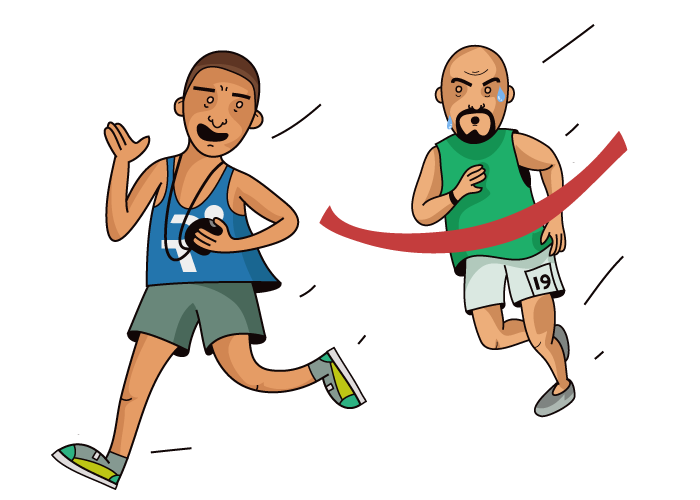
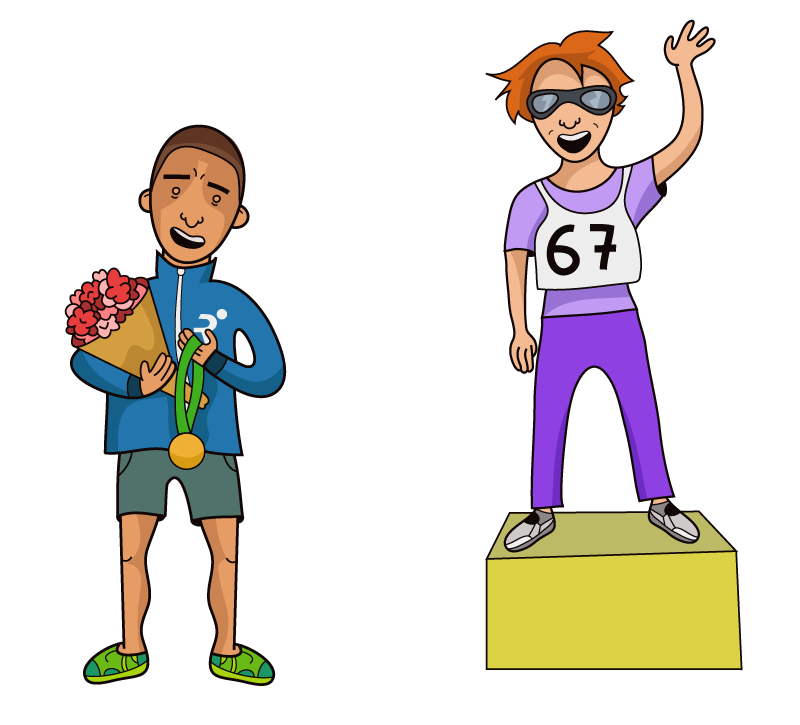
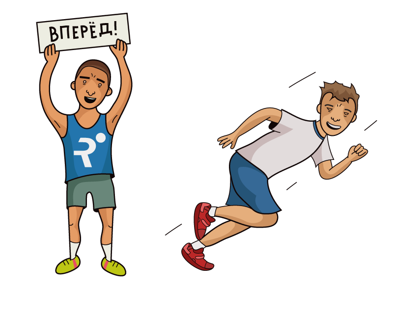

Олег Амбрашитов

Год подходит к своему завершению и, конечно, создание или фактический ввод в эксплуатацию нашего бегового клуба произошел именно в этом году, у нас есть: два тренера, менеджер, сайт, блог, социальные сети тренеров, заточенные под школу бега и, конечно, у нас есть наши любимые ученики. Сегодня речь пойдет о тех учениках, которые с нами с самого начала и остаются с нами по сей день. Да простят меня остальные ученики, но к первым всегда испытываешь особый трепет. Тогда еще все было в новинку и диковинку, к многим из Вас я немного боялся "прикоснуться", но уверенность скоро пришла, а вместе с ней и богатый опыт - неоценимый опыт.
Олег Амбрашитов
Да, этот мужчина с бородкой, который мне просто сказал, что хочет бегать 10-15-20 км, сначала в лучшем случае мог пробежать 5 км, много занимались ходьбой, укреплением ног, но, а сейчас он уже мечтает и всерьез теребит тренера о Марафоне, рвется в степи Эльтона. Из достижений этого года можем отметить первый преодоленный полумарафон. Несмотря на комплекцию Олега - он от природы награжден очень хорошей координацией и очень быстрой обучаемостью.
Анна Проклашкина
Пришла ко мне и заявила, что хочет пробежать полумарафон через 2 месяца, на дворе был март и тренировки Анна выполняла в зале на беговой дорожке, как понимаете, тоже новый для меня опыт. Сразу отметил профессиональный подход Анны и был уверен, что заявленное ее время в 2.30 на полумарафоне мы с легкостью преодолеем. Но! Прямо перед Московским полумарафоном Анна заявила мне, что лето-пора отпусков и свободное время она будет уделять своей еще одной страсти - волейболу. Напомню, что она никогда не участвовала в соревнованиях по бегу. В итоге, 1.53.53 на первом в ее жизни полумарафоне и никуда она не ушла, а еще больше втянулась в бег и всевозможные ее заграничные старты тому подтверждение,а Анна - мама троих детей и сами понимаете, как трудно куда-то вырваться хотя бы на три дня.
Андрей Пляцидевский
Человек большого здоровья, которого нужно правильно направить и уговорить, что нужно бегать помедленнее и поменьше и урезать количество стартов, а в остальном Андрей исполнит тренировку и обязательно поблагодарит, что ему хорошо себя чувствуется. Звездный час Андрея наступил в этом году на Эльбрусе, когда он неожиданно для многих занял 3 место на дистанции 59 км, также можно отметить его 2.48 на Московском Марафоне, где он сбросил 23 минуты с личного рекорда.
Вообще говоря, мы эту рубрику хотим сделать регулярной, так как у нас занимается очень много интересных людей, о которых можно рассказывать и рассказывать. Тренер Вами гордиться. Ребята, всех с наступающим Новым Годом и давайте в наступающем году продолжим начатое и, конечно, приумножим, а с такой командой я не сомневаюсь в успехе.